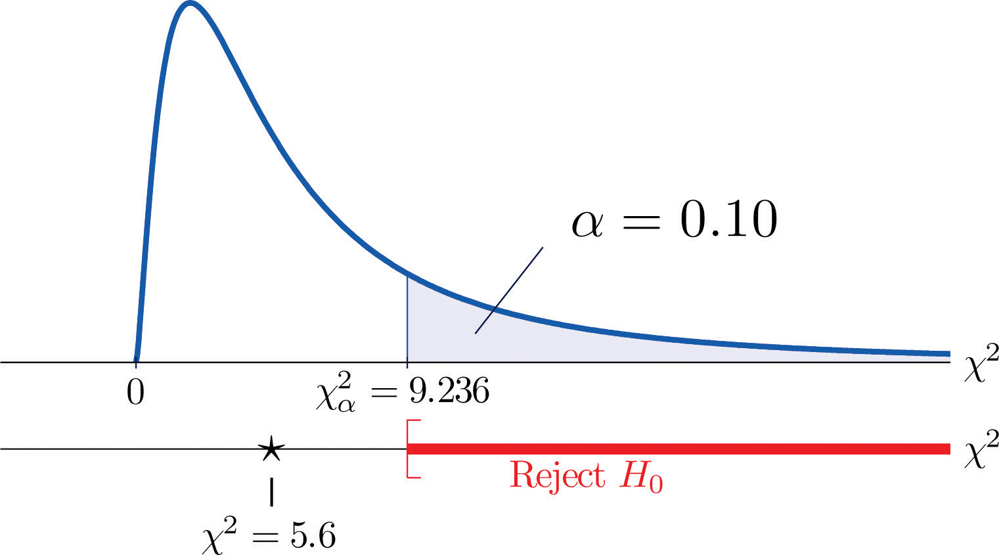
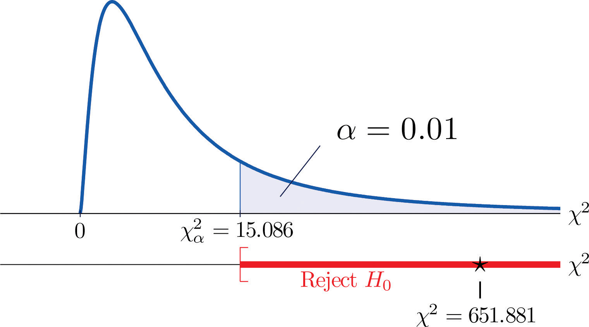
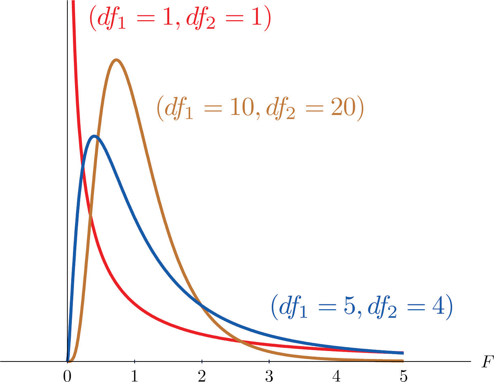
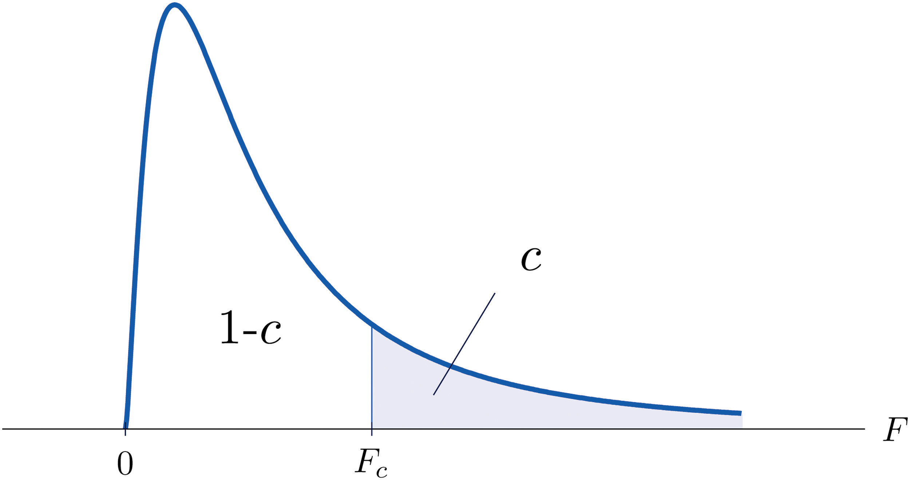
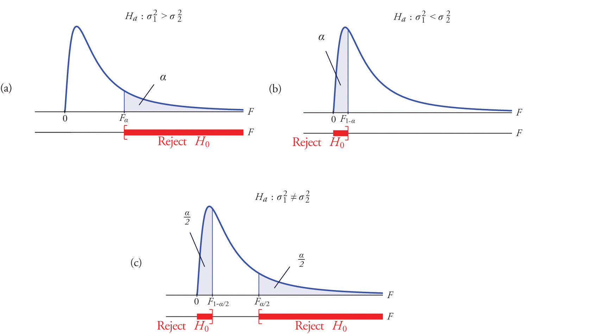
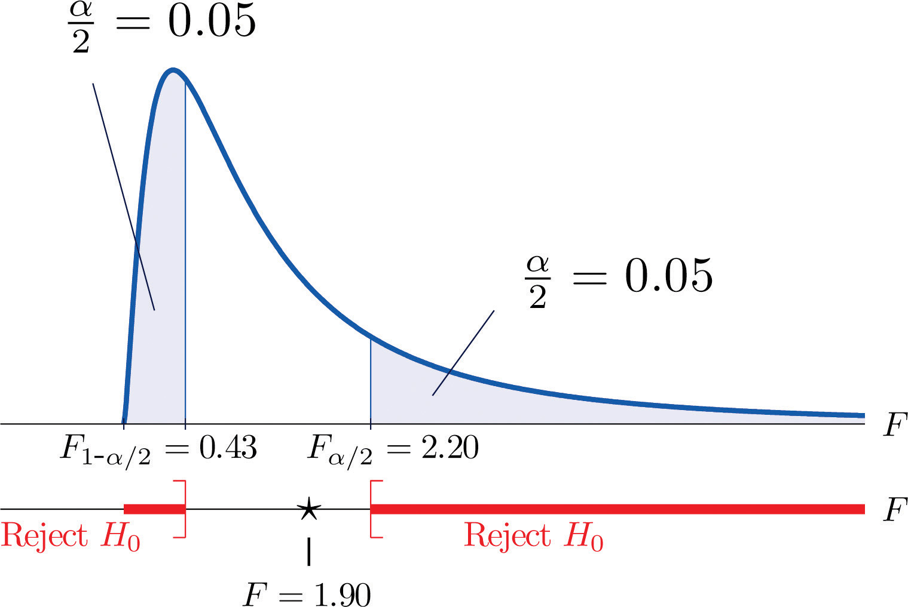
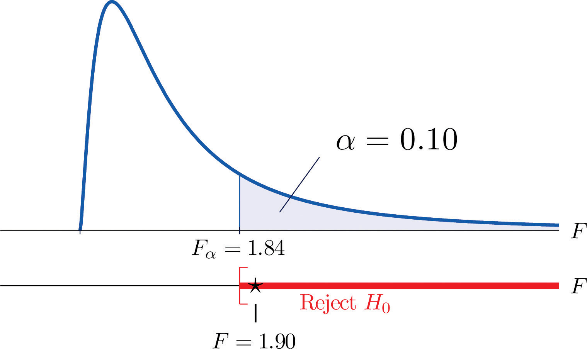

In previous chapters you saw how to test hypotheses concerning population means and population proportions. The idea of testing hypotheses can be extended to many other situations that involve different parameters and use different test statistics. Whereas the standardized test statistics that appeared in earlier chapters followed either a normal or Student t-distribution, in this chapter the tests will involve two other very common and useful distributions, the chi-square and the F-distributions. The chi-square distributionA particular probability distribution specified by a number of degrees of freedom, . arises in tests of hypotheses concerning the independence of two random variables and concerning whether a discrete random variable follows a specified distribution. The F-distributionA particular probability distribution specified by two degrees of freedom, and arises in tests of hypotheses concerning whether or not two population variances are equal and concerning whether or not three or more population means are equal.
As you know, there is a whole family of t-distributions, each one specified by a parameter called the degrees of freedom, denoted Similarly, all the chi-square distributions form a family, and each of its members is also specified by a parameter , the number of degrees of freedom. Chi is a Greek letter denoted by the symbol and chi-square is often denoted by Figure 11.1 "Many " shows several chi-square distributions for different degrees of freedom. A chi-square random variableA random variable that follows a chi-square distribution. is a random variable that assumes only positive values and follows a chi-square distribution.
Figure 11.1 Many Distributions

The value of the chi-square random variable with that cuts off a right tail of area c is denoted and is called a critical value. See Figure 11.2.
Figure 11.2 Illustrated

Figure 12.4 "Critical Values of Chi-Square Distributions" gives values of for various values of c and under several chi-square distributions with various degrees of freedom.
Hypotheses tests encountered earlier in the book had to do with how the numerical values of two population parameters compared. In this subsection we will investigate hypotheses that have to do with whether or not two random variables take their values independently, or whether the value of one has a relation to the value of the other. Thus the hypotheses will be expressed in words, not mathematical symbols. We build the discussion around the following example.
There is a theory that the gender of a baby in the womb is related to the baby’s heart rate: baby girls tend to have higher heart rates. Suppose we wish to test this theory. We examine the heart rate records of 40 babies taken during their mothers’ last prenatal checkups before delivery, and to each of these 40 randomly selected records we compute the values of two random measures: 1) gender and 2) heart rate. In this context these two random measures are often called factorsA variable with several qualitative levels.. Since the burden of proof is that heart rate and gender are related, not that they are unrelated, the problem of testing the theory on baby gender and heart rate can be formulated as a test of the following hypotheses:
The factor gender has two natural categories or levels: boy and girl. We divide the second factor, heart rate, into two levels, low and high, by choosing some heart rate, say 145 beats per minute, as the cutoff between them. A heart rate below 145 beats per minute will be considered low and 145 and above considered high. The 40 records give rise to a 2 × 2 contingency table. By adjoining row totals, column totals, and a grand total we obtain the table shown as Table 11.1 "Baby Gender and Heart Rate". The four entries in boldface type are counts of observations from the sample of n = 40. There were 11 girls with low heart rate, 17 boys with low heart rate, and so on. They form the core of the expanded table.
Table 11.1 Baby Gender and Heart Rate
| Heart Rate | ||||
|---|---|---|---|---|
| Low | High | Row Total | ||
| Gender | Girl | 11 | 7 | 18 |
| Boy | 17 | 5 | 22 | |
| Column Total | 28 | 12 | Total = 40 | |
In analogy with the fact that the probability of independent events is the product of the probabilities of each event, if heart rate and gender were independent then we would expect the number in each core cell to be close to the product of the row total R and column total C of the row and column containing it, divided by the sample size n. Denoting such an expected number of observations E, these four expected values are:
We update Table 11.1 "Baby Gender and Heart Rate" by placing each expected value in its corresponding core cell, right under the observed value in the cell. This gives the updated table Table 11.2 "Updated Baby Gender and Heart Rate".
Table 11.2 Updated Baby Gender and Heart Rate
| Heart Rate | ||||
|---|---|---|---|---|
| Low | High | Row Total | ||
| Gender | Girl | R = 18 | ||
| Boy | R = 22 | |||
| Column Total | C = 28 | C = 12 | n = 40 | |
A measure of how much the data deviate from what we would expect to see if the factors really were independent is the sum of the squares of the difference of the numbers in each core cell, or, standardizing by dividing each square by the expected number in the cell, the sum We would reject the null hypothesis that the factors are independent only if this number is large, so the test is right-tailed. In this example the random variable has the chi-square distribution with one degree of freedom. If we had decided at the outset to test at the 10% level of significance, the critical value defining the rejection region would be, reading from Figure 12.4 "Critical Values of Chi-Square Distributions", , so that the rejection region would be the interval When we compute the value of the standardized test statistic we obtain
Since 1.231 < 2.706, the decision is not to reject H0. See Figure 11.3 "Baby Gender Prediction". The data do not provide sufficient evidence, at the 10% level of significance, to conclude that heart rate and gender are related.
Figure 11.3 Baby Gender Prediction

With this specific example in mind, now turn to the general situation. In the general setting of testing the independence of two factors, call them Factor 1 and Factor 2, the hypotheses to be tested are
As in the example each factor is divided into a number of categories or levels. These could arise naturally, as in the boy-girl division of gender, or somewhat arbitrarily, as in the high-low division of heart rate. Suppose Factor 1 has I levels and Factor 2 has J levels. Then the information from a random sample gives rise to a general I × J contingency table, which with row totals, column totals, and a grand total would appear as shown in Table 11.3 "General Contingency Table". Each cell may be labeled by a pair of indices stands for the observed count of observations in the cell in row i and column j, Ri for the row total and Cj for the column total. To simplify the notation we will drop the indices so Table 11.3 "General Contingency Table" becomes Table 11.4 "Simplified General Contingency Table". Nevertheless it is important to keep in mind that the Os, the Rs and the Cs, though denoted by the same symbols, are in fact different numbers.
Table 11.3 General Contingency Table
| Factor 2 Levels | |||||||
|---|---|---|---|---|---|---|---|
| 1 | j | J | Row Total | ||||
| Factor 1 Levels | 1 | O11 | R1 | ||||
| ⋮ | ⋮ | ⋮ | ⋮ | ⋮ | ⋮ | ⋮ | |
| i | Ri | ||||||
| ⋮ | ⋮ | ⋮ | ⋮ | ⋮ | ⋮ | ⋮ | |
| I | RI | ||||||
| Column Total | C1 | Cj | CJ | n | |||
Table 11.4 Simplified General Contingency Table
| Factor 2 Levels | |||||||
|---|---|---|---|---|---|---|---|
| 1 | j | J | Row Total | ||||
| Factor 1 Levels | 1 | O | O | O | R | ||
| ⋮ | ⋮ | ⋮ | ⋮ | ⋮ | ⋮ | ⋮ | |
| i | O | O | O | R | |||
| ⋮ | ⋮ | ⋮ | ⋮ | ⋮ | ⋮ | ⋮ | |
| I | O | O | O | R | |||
| Column Total | C | C | C | n | |||
As in the example, for each core cell in the table we compute what would be the expected number E of observations if the two factors were independent. E is computed for each core cell (each cell with an O in it) of Table 11.4 "Simplified General Contingency Table" by the rule applied in the example:
where R is the row total and C is the column total corresponding to the cell, and n is the sample size.
After the expected number is computed for every cell, Table 11.4 "Simplified General Contingency Table" is updated to form Table 11.5 "Updated General Contingency Table" by inserting the computed value of E into each core cell.
Table 11.5 Updated General Contingency Table
| Factor 2 Levels | |||||||
|---|---|---|---|---|---|---|---|
| 1 | j | J | Row Total | ||||
| Factor 1 Levels | 1 | R | |||||
| ⋮ | ⋮ | ⋮ | ⋮ | ⋮ | ⋮ | ⋮ | |
| i | R | ||||||
| ⋮ | ⋮ | ⋮ | ⋮ | ⋮ | ⋮ | ⋮ | |
| I | R | ||||||
| Column Total | C | C | C | n | |||
Here is the test statistic for the general hypothesis based on Table 11.5 "Updated General Contingency Table", together with the conditions that it follow a chi-square distribution.
where the sum is over all core cells of the table.
If
then approximately follows a chi-square distribution with degrees of freedom.
The same five-step procedures, either the critical value approach or the p-value approach, that were introduced in Section 8.1 "The Elements of Hypothesis Testing" and Section 8.3 "The Observed Significance of a Test" of Chapter 8 "Testing Hypotheses" are used to perform the test, which is always right-tailed.
A researcher wishes to investigate whether students’ scores on a college entrance examination (CEE) have any indicative power for future college performance as measured by GPA. In other words, he wishes to investigate whether the factors CEE and GPA are independent or not. He randomly selects n = 100 students in a college and notes each student’s score on the entrance examination and his grade point average at the end of the sophomore year. He divides entrance exam scores into two levels and grade point averages into three levels. Sorting the data according to these divisions, he forms the contingency table shown as Table 11.6 "CEE versus GPA Contingency Table", in which the row and column totals have already been computed.
Table 11.6 CEE versus GPA Contingency Table
| GPA | |||||
|---|---|---|---|---|---|
| <2.7 | 2.7 to 3.2 | >3.2 | Row Total | ||
| CEE | 35 | 12 | 5 | 52 | |
| 6 | 24 | 18 | 48 | ||
| Column Total | 41 | 36 | 23 | ||
Test, at the 1% level of significance, whether these data provide sufficient evidence to conclude that CEE scores indicate future performance levels of incoming college freshmen as measured by GPA.
Solution:
We perform the test using the critical value approach, following the usual five-step method outlined at the end of Section 8.1 "The Elements of Hypothesis Testing" in Chapter 8 "Testing Hypotheses".
Step 1. The hypotheses are
Step 3. To compute the value of the test statistic we must first computed the expected number for each of the six core cells (the ones whose entries are boldface):
Table 11.6 "CEE versus GPA Contingency Table" is updated to Table 11.7 "Updated CEE versus GPA Contingency Table".
Table 11.7 Updated CEE versus GPA Contingency Table
| GPA | |||||
|---|---|---|---|---|---|
| <2.7 | 2.7 to 3.2 | >3.2 | Row Total | ||
| CEE | R = 52 | ||||
| R = 48 | |||||
| Column Total | C = 41 | C = 36 | C = 23 | n = 100 | |
The test statistic is
Step 4. Since the CEE factor has two levels and the GPA factor has three, I = 2 and J = 3. Thus the test statistic follows the chi-square distribution with degrees of freedom.
Since the test is right-tailed, the critical value is Reading from Figure 12.4 "Critical Values of Chi-Square Distributions", , so the rejection region is
Figure 11.4 Note 11.9 "Example 1"

Find for each of the following number of degrees of freedom.
Find for each of the following number of degrees of freedom.
Find for each of the following number of degrees of freedom.
Find for each of the following number of degrees of freedom.
For and , find
For and , find
A data sample is sorted into a 2 × 2 contingency table based on two factors, each of which has two levels.
| Factor 1 | ||||
|---|---|---|---|---|
| Level 1 | Level 2 | Row Total | ||
| Factor 2 | Level 1 | R | ||
| Level 2 | R | |||
| Column Total | C | C | n | |
A data sample is sorted into a 3 × 2 contingency table based on two factors, one of which has three levels and the other of which has two levels.
| Factor 1 | ||||
|---|---|---|---|---|
| Level 1 | Level 2 | Row Total | ||
| Factor 2 | Level 1 | R | ||
| Level 2 | R | |||
| Level 3 | R | |||
| Column Total | C | C | n | |
A child psychologist believes that children perform better on tests when they are given perceived freedom of choice. To test this belief, the psychologist carried out an experiment in which 200 third graders were randomly assigned to two groups, A and B. Each child was given the same simple logic test. However in group B, each child was given the freedom to choose a text booklet from many with various drawings on the covers. The performance of each child was rated as Very Good, Good, and Fair. The results are summarized in the table provided. Test, at the 5% level of significance, whether there is sufficient evidence in the data to support the psychologist’s belief.
| Group | |||
|---|---|---|---|
| A | B | ||
| Performance | Very Good | 32 | 29 |
| Good | 55 | 61 | |
| Fair | 10 | 13 | |
In regard to wine tasting competitions, many experts claim that the first glass of wine served sets a reference taste and that a different reference wine may alter the relative ranking of the other wines in competition. To test this claim, three wines, A, B and C, were served at a wine tasting event. Each person was served a single glass of each wine, but in different orders for different guests. At the close, each person was asked to name the best of the three. One hundred seventy-two people were at the event and their top picks are given in the table provided. Test, at the 1% level of significance, whether there is sufficient evidence in the data to support the claim that wine experts’ preference is dependent on the first served wine.
| Top Pick | ||||
|---|---|---|---|---|
| A | B | C | ||
| First Glass | A | 12 | 31 | 27 |
| B | 15 | 40 | 21 | |
| C | 10 | 9 | 7 | |
Is being left-handed hereditary? To answer this question, 250 adults are randomly selected and their handedness and their parents’ handedness are noted. The results are summarized in the table provided. Test, at the 1% level of significance, whether there is sufficient evidence in the data to conclude that there is a hereditary element in handedness.
| Number of Parents Left-Handed | ||||
|---|---|---|---|---|
| 0 | 1 | 2 | ||
| Handedness | Left | 8 | 10 | 12 |
| Right | 178 | 21 | 21 | |
Some geneticists claim that the genes that determine left-handedness also govern development of the language centers of the brain. If this claim is true, then it would be reasonable to expect that left-handed people tend to have stronger language abilities. A study designed to text this claim randomly selected 807 students who took the Graduate Record Examination (GRE). Their scores on the language portion of the examination were classified into three categories: low, average, and high, and their handedness was also noted. The results are given in the table provided. Test, at the 5% level of significance, whether there is sufficient evidence in the data to conclude that left-handed people tend to have stronger language abilities.
| GRE English Scores | ||||
|---|---|---|---|---|
| Low | Average | High | ||
| Handedness | Left | 18 | 40 | 22 |
| Right | 201 | 360 | 166 | |
It is generally believed that children brought up in stable families tend to do well in school. To verify such a belief, a social scientist examined 290 randomly selected students’ records in a public high school and noted each student’s family structure and academic status four years after entering high school. The data were then sorted into a 2 × 3 contingency table with two factors. Factor 1 has two levels: graduated and did not graduate. Factor 2 has three levels: no parent, one parent, and two parents. The results are given in the table provided. Test, at the 1% level of significance, whether there is sufficient evidence in the data to conclude that family structure matters in school performance of the students.
| Academic Status | |||
|---|---|---|---|
| Graduated | Did Not Graduate | ||
| Family | No parent | 18 | 31 |
| One parent | 101 | 44 | |
| Two parents | 70 | 26 | |
A large middle school administrator wishes to use celebrity influence to encourage students to make healthier choices in the school cafeteria. The cafeteria is situated at the center of an open space. Everyday at lunch time students get their lunch and a drink in three separate lines leading to three separate serving stations. As an experiment, the school administrator displayed a poster of a popular teen pop star drinking milk at each of the three areas where drinks are provided, except the milk in the poster is different at each location: one shows white milk, one shows strawberry-flavored pink milk, and one shows chocolate milk. After the first day of the experiment the administrator noted the students’ milk choices separately for the three lines. The data are given in the table provided. Test, at the 1% level of significance, whether there is sufficient evidence in the data to conclude that the posters had some impact on the students’ drink choices.
| Student Choice | |||
|---|---|---|---|
| Regular | Strawberry | Chocolate | |
| Poster Choice | |||
| Regular | 38 | 28 | 40 |
| Strawberry | 18 | 51 | 24 |
| Chocolate | 32 | 32 | 53 |
Large Data Set 8 records the result of a survey of 300 randomly selected adults who go to movie theaters regularly. For each person the gender and preferred type of movie were recorded. Test, at the 5% level of significance, whether there is sufficient evidence in the data to conclude that the factors “gender” and “preferred type of movie” are dependent.
http://www.gone.2012books.lardbucket.org/sites/all/files/data8.xls
, , do not reject H0
, , reject H0
, , reject H0
Rejection Region: Decision: Reject H0 of independence.
Suppose we wish to determine if an ordinary-looking six-sided die is fair, or balanced, meaning that every face has probability 1/6 of landing on top when the die is tossed. We could toss the die dozens, maybe hundreds, of times and compare the actual number of times each face landed on top to the expected number, which would be 1/6 of the total number of tosses. We wouldn’t expect each number to be exactly 1/6 of the total, but it should be close. To be specific, suppose the die is tossed n = 60 times with the results summarized in Table 11.8 "Die Contingency Table". For ease of reference we add a column of expected frequencies, which in this simple example is simply a column of 10s. The result is shown as Table 11.9 "Updated Die Contingency Table". In analogy with the previous section we call this an “updated” table. A measure of how much the data deviate from what we would expect to see if the die really were fair is the sum of the squares of the differences between the observed frequency O and the expected frequency E in each row, or, standardizing by dividing each square by the expected number, the sum If we formulate the investigation as a test of hypotheses, the test is
Table 11.8 Die Contingency Table
| Die Value | Assumed Distribution | Observed Frequency |
|---|---|---|
| 1 | 1/6 | 9 |
| 2 | 1/6 | 15 |
| 3 | 1/6 | 9 |
| 4 | 1/6 | 8 |
| 5 | 1/6 | 6 |
| 6 | 1/6 | 13 |
Table 11.9 Updated Die Contingency Table
| Die Value | Assumed Distribution | Observed Freq. | Expected Freq. |
|---|---|---|---|
| 1 | 1/6 | 9 | 10 |
| 2 | 1/6 | 15 | 10 |
| 3 | 1/6 | 9 | 10 |
| 4 | 1/6 | 8 | 10 |
| 5 | 1/6 | 6 | 10 |
| 6 | 1/6 | 13 | 10 |
We would reject the null hypothesis that the die is fair only if the number is large, so the test is right-tailed. In this example the random variable has the chi-square distribution with five degrees of freedom. If we had decided at the outset to test at the 10% level of significance, the critical value defining the rejection region would be, reading from Figure 12.4 "Critical Values of Chi-Square Distributions", , so that the rejection region would be the interval When we compute the value of the standardized test statistic using the numbers in the last two columns of Table 11.9 "Updated Die Contingency Table", we obtain
Since 5.6 < 9.236 the decision is not to reject H0. See Figure 11.5 "Balanced Die". The data do not provide sufficient evidence, at the 10% level of significance, to conclude that the die is loaded.
Figure 11.5 Balanced Die
In the general situation we consider a discrete random variable that can take I different values, , for which the default assumption is that the probability distribution is
We wish to test the hypotheses
We take a sample of size n and obtain a list of observed frequencies. This is shown in Table 11.10 "General Contingency Table". Based on the assumed probability distribution we also have a list of assumed frequencies, each of which is defined and computed by the formula
Table 11.10 General Contingency Table
| Factor Levels | Assumed Distribution | Observed Frequency |
|---|---|---|
| 1 | p1 | O1 |
| 2 | p2 | O2 |
| ⋮ | ⋮ | ⋮ |
| I | pI | OI |
Table 11.10 "General Contingency Table" is updated to Table 11.11 "Updated General Contingency Table" by adding the expected frequency for each value of X. To simplify the notation we drop indices for the observed and expected frequencies and represent Table 11.11 "Updated General Contingency Table" by Table 11.12 "Simplified Updated General Contingency Table".
Table 11.11 Updated General Contingency Table
| Factor Levels | Assumed Distribution | Observed Freq. | Expected Freq. |
|---|---|---|---|
| 1 | p1 | O1 | E1 |
| 2 | p2 | O2 | E2 |
| ⋮ | ⋮ | ⋮ | ⋮ |
| I | pI | OI | EI |
Table 11.12 Simplified Updated General Contingency Table
| Factor Levels | Assumed Distribution | Observed Freq. | Expected Freq. |
|---|---|---|---|
| 1 | p1 | O | E |
| 2 | p2 | O | E |
| ⋮ | ⋮ | ⋮ | ⋮ |
| I | pI | O | E |
Here is the test statistic for the general hypothesis based on Table 11.12 "Simplified Updated General Contingency Table", together with the conditions that it follow a chi-square distribution.
where the sum is over all the rows of the table (one for each value of X).
If
then approximately follows a chi-square distribution with degrees of freedom.
The test is known as a goodness-of-fit test since it tests the null hypothesis that the sample fits the assumed probability distribution well. It is always right-tailed, since deviation from the assumed probability distribution corresponds to large values of
Testing is done using either of the usual five-step procedures.
Table 11.13 "Ethnic Groups in the Census Year" shows the distribution of various ethnic groups in the population of a particular state based on a decennial U.S. census. Five years later a random sample of 2,500 residents of the state was taken, with the results given in Table 11.14 "Sample Data Five Years After the Census Year" (along with the probability distribution from the census year). Test, at the 1% level of significance, whether there is sufficient evidence in the sample to conclude that the distribution of ethnic groups in this state five years after the census had changed from that in the census year.
Table 11.13 Ethnic Groups in the Census Year
| Ethnicity | White | Black | Amer.-Indian | Hispanic | Asian | Others |
|---|---|---|---|---|---|---|
| Proportion | 0.743 | 0.216 | 0.012 | 0.012 | 0.008 | 0.009 |
Table 11.14 Sample Data Five Years After the Census Year
| Ethnicity | Assumed Distribution | Observed Frequency |
|---|---|---|
| White | 0.743 | 1732 |
| Black | 0.216 | 538 |
| American-Indian | 0.012 | 32 |
| Hispanic | 0.012 | 42 |
| Asian | 0.008 | 133 |
| Others | 0.009 | 23 |
Solution:
We test using the critical value approach.
Step 1. The hypotheses of interest in this case can be expressed as
Step 3. To compute the value of the test statistic we must first compute the expected number for each row of Table 11.14 "Sample Data Five Years After the Census Year". Since n = 2500, using the formula and the values of pi from either Table 11.13 "Ethnic Groups in the Census Year" or Table 11.14 "Sample Data Five Years After the Census Year",
Table 11.14 "Sample Data Five Years After the Census Year" is updated to Table 11.15 "Observed and Expected Frequencies Five Years After the Census Year".
Table 11.15 Observed and Expected Frequencies Five Years After the Census Year
| Ethnicity | Assumed Dist. | Observed Freq. | Expected Freq. |
|---|---|---|---|
| White | 0.743 | 1732 | 1857.5 |
| Black | 0.216 | 538 | 540 |
| American-Indian | 0.012 | 32 | 30 |
| Hispanic | 0.012 | 42 | 30 |
| Asian | 0.008 | 133 | 20 |
| Others | 0.009 | 23 | 22.5 |
The value of the test statistic is
Since the random variable takes six values, I = 6. Thus the test statistic follows the chi-square distribution with degrees of freedom.
Since the test is right-tailed, the critical value is Reading from Figure 12.4 "Critical Values of Chi-Square Distributions", , so the rejection region is
Figure 11.6 Note 11.15 "Example 2"
A data sample is sorted into five categories with an assumed probability distribution.
| Factor Levels | Assumed Distribution | Observed Frequency |
|---|---|---|
| 1 | 10 | |
| 2 | 35 | |
| 3 | 45 | |
| 4 | 10 |
A data sample is sorted into five categories with an assumed probability distribution.
| Factor Levels | Assumed Distribution | Observed Frequency |
|---|---|---|
| 1 | 23 | |
| 2 | 30 | |
| 3 | 19 | |
| 4 | 8 | |
| 5 | 10 |
Retailers of collectible postage stamps often buy their stamps in large quantities by weight at auctions. The prices the retailers are willing to pay depend on how old the postage stamps are. Many collectible postage stamps at auctions are described by the proportions of stamps issued at various periods in the past. Generally the older the stamps the higher the value. At one particular auction, a lot of collectible stamps is advertised to have the age distribution given in the table provided. A retail buyer took a sample of 73 stamps from the lot and sorted them by age. The results are given in the table provided. Test, at the 5% level of significance, whether there is sufficient evidence in the data to conclude that the age distribution of the lot is different from what was claimed by the seller.
| Year | Claimed Distribution | Observed Frequency |
|---|---|---|
| Before 1940 | 0.10 | 6 |
| 1940 to 1959 | 0.25 | 15 |
| 1960 to 1979 | 0.45 | 30 |
| After 1979 | 0.20 | 22 |
The litter size of Bengal tigers is typically two or three cubs, but it can vary between one and four. Based on long-term observations, the litter size of Bengal tigers in the wild has the distribution given in the table provided. A zoologist believes that Bengal tigers in captivity tend to have different (possibly smaller) litter sizes from those in the wild. To verify this belief, the zoologist searched all data sources and found 316 litter size records of Bengal tigers in captivity. The results are given in the table provided. Test, at the 5% level of significance, whether there is sufficient evidence in the data to conclude that the distribution of litter sizes in captivity differs from that in the wild.
| Litter Size | Wild Litter Distribution | Observed Frequency |
|---|---|---|
| 1 | 0.11 | 41 |
| 2 | 0.69 | 243 |
| 3 | 0.18 | 27 |
| 4 | 0.02 | 5 |
An online shoe retailer sells men’s shoes in sizes 8 to 13. In the past orders for the different shoe sizes have followed the distribution given in the table provided. The management believes that recent marketing efforts may have expanded their customer base and, as a result, there may be a shift in the size distribution for future orders. To have a better understanding of its future sales, the shoe seller examined 1,040 sales records of recent orders and noted the sizes of the shoes ordered. The results are given in the table provided. Test, at the 1% level of significance, whether there is sufficient evidence in the data to conclude that the shoe size distribution of future sales will differ from the historic one.
| Shoe Size | Past Size Distribution | Recent Size Frequency |
|---|---|---|
| 8.0 | 0.03 | 25 |
| 8.5 | 0.06 | 43 |
| 9.0 | 0.09 | 88 |
| 9.5 | 0.19 | 221 |
| 10.0 | 0.23 | 272 |
| 10.5 | 0.14 | 150 |
| 11.0 | 0.10 | 107 |
| 11.5 | 0.06 | 51 |
| 12.0 | 0.05 | 37 |
| 12.5 | 0.03 | 35 |
| 13.0 | 0.02 | 11 |
An online shoe retailer sells women’s shoes in sizes 5 to 10. In the past orders for the different shoe sizes have followed the distribution given in the table provided. The management believes that recent marketing efforts may have expanded their customer base and, as a result, there may be a shift in the size distribution for future orders. To have a better understanding of its future sales, the shoe seller examined 1,174 sales records of recent orders and noted the sizes of the shoes ordered. The results are given in the table provided. Test, at the 1% level of significance, whether there is sufficient evidence in the data to conclude that the shoe size distribution of future sales will differ from the historic one.
| Shoe Size | Past Size Distribution | Recent Size Frequency |
|---|---|---|
| 5.0 | 0.02 | 20 |
| 5.5 | 0.03 | 23 |
| 6.0 | 0.07 | 88 |
| 6.5 | 0.08 | 90 |
| 7.0 | 0.20 | 222 |
| 7.5 | 0.20 | 258 |
| 8.0 | 0.15 | 177 |
| 8.5 | 0.11 | 121 |
| 9.0 | 0.08 | 91 |
| 9.5 | 0.04 | 53 |
| 10.0 | 0.02 | 31 |
A chess opening is a sequence of moves at the beginning of a chess game. There are many well-studied named openings in chess literature. French Defense is one of the most popular openings for black, although it is considered a relatively weak opening since it gives black probability 0.344 of winning, probability 0.405 of losing, and probability 0.251 of drawing. A chess master believes that he has discovered a new variation of French Defense that may alter the probability distribution of the outcome of the game. In his many Internet chess games in the last two years, he was able to apply the new variation in 77 games. The wins, losses, and draws in the 77 games are given in the table provided. Test, at the 5% level of significance, whether there is sufficient evidence in the data to conclude that the newly discovered variation of French Defense alters the probability distribution of the result of the game.
| Result for Black | Probability Distribution | New Variation Wins |
|---|---|---|
| Win | 0.344 | 31 |
| Loss | 0.405 | 25 |
| Draw | 0.251 | 21 |
The Department of Parks and Wildlife stocks a large lake with fish every six years. It is determined that a healthy diversity of fish in the lake should consist of 10% largemouth bass, 15% smallmouth bass, 10% striped bass, 10% trout, and 20% catfish. Therefore each time the lake is stocked, the fish population in the lake is restored to maintain that particular distribution. Every three years, the department conducts a study to see whether the distribution of the fish in the lake has shifted away from the target proportions. In one particular year, a research group from the department observed a sample of 292 fish from the lake with the results given in the table provided. Test, at the 5% level of significance, whether there is sufficient evidence in the data to conclude that the fish population distribution has shifted since the last stocking.
| Fish | Target Distribution | Fish in Sample |
|---|---|---|
| Largemouth Bass | 0.10 | 14 |
| Smallmouth Bass | 0.15 | 49 |
| Striped Bass | 0.10 | 21 |
| Trout | 0.10 | 22 |
| Catfish | 0.20 | 75 |
| Other | 0.35 | 111 |
Large Data Set 4 records the result of 500 tosses of six-sided die. Test, at the 10% level of significance, whether there is sufficient evidence in the data to conclude that the die is not “fair” (or “balanced”), that is, that the probability distribution differs from probability 1/6 for each of the six faces on the die.
http://www.gone.2012books.lardbucket.org/sites/all/files/data4.xls
, , do not reject H0
, , reject H0
, , do not reject H0
Rejection Region: Decision: Fail to reject H0 of balance.
Another important and useful family of distributions in statistics is the family of F-distributions. Each member of the F-distribution family is specified by a pair of parameters called degrees of freedom and denoted and Figure 11.7 "Many " shows several F-distributions for different pairs of degrees of freedom. An random variableA random variable following an F-distribution. is a random variable that assumes only positive values and follows an F-distribution.
Figure 11.7 Many F-Distributions
The parameter is often referred to as the numerator degrees of freedom and the parameter as the denominator degrees of freedom. It is important to keep in mind that they are not interchangeable. For example, the F-distribution with degrees of freedom and is a different distribution from the F-distribution with degrees of freedom and
The value of the F random variable F with degrees of freedom and that cuts off a right tail of area c is denoted Fc and is called a critical value. See Figure 11.8.
Figure 11.8 Fc Illustrated
Tables containing the values of Fc are given in Chapter 11 "Chi-Square Tests and ". Each of the tables is for a fixed collection of values of c, either 0.900, 0.950, 0.975, 0.990, and 0.995 (yielding what are called “lower” critical values), or 0.005, 0.010, 0.025, 0.050, and 0.100 (yielding what are called “upper” critical values). In each table critical values are given for various pairs We illustrate the use of the tables with several examples.
Suppose F is an F random variable with degrees of freedom and Use the tables to find
Solution:
The column headings of all the tables contain Look for the table for which 0.10 is one of the entries on the extreme left (a table of upper critical values) and that has a row heading in the left margin of the table. A portion of the relevant table is provided. The entry in the intersection of the column with heading and the row with the headings 0.10 and , which is shaded in the table provided, is the answer,
| F Tail Area | 1 | 2 | 5 | |||
|---|---|---|---|---|---|---|
| ⋮ | ⋮ | ⋮ | ⋮ | ⋮ | ⋮ | ⋮ |
| 0.005 | 4 | 22.5 | ||||
| 0.01 | 4 | 15.5 | ||||
| 0.025 | 4 | 9.36 | ||||
| 0.05 | 4 | 6.26 | ||||
| 0.10 | 4 | |||||
| ⋮ | ⋮ | ⋮ | ⋮ | ⋮ | ⋮ | ⋮ |
Look for the table for which 0.95 is one of the entries on the extreme left (a table of lower critical values) and that has a row heading in the left margin of the table. A portion of the relevant table is provided. The entry in the intersection of the column with heading and the row with the headings 0.95 and , which is shaded in the table provided, is the answer,
| F Tail Area | 1 | 2 | 5 | |||
|---|---|---|---|---|---|---|
| ⋮ | ⋮ | ⋮ | ⋮ | ⋮ | ⋮ | ⋮ |
| 0.90 | 4 | 0.28 | ||||
| 0.95 | 4 | |||||
| 0.975 | 4 | 0.14 | ||||
| 0.99 | 4 | 0.09 | ||||
| 0.995 | 4 | 0.06 | ||||
| ⋮ | ⋮ | ⋮ | ⋮ | ⋮ | ⋮ | ⋮ |
Suppose is an F random variable with degrees of freedom and Let Use the tables to find
Solution:
The column headings of all the tables contain Look for the table for which is one of the entries on the extreme left (a table of upper critical values) and that has a row heading in the left margin of the table. A portion of the relevant table is provided. The shaded entry, in the intersection of the column with heading and the row with the headings 0.05 and is the answer,
| F Tail Area | 1 | 2 | ||
|---|---|---|---|---|
| ⋮ | ⋮ | ⋮ | ⋮ | ⋮ |
| 0.005 | 20 | 6.99 | ||
| 0.01 | 20 | 5.85 | ||
| 0.025 | 20 | 4.46 | ||
| 0.05 | 20 | |||
| 0.10 | 20 | 2.59 | ||
| ⋮ | ⋮ | ⋮ | ⋮ | ⋮ |
Look for the table for which is one of the entries on the extreme left (a table of upper critical values) and that has a row heading in the left margin of the table. A portion of the relevant table is provided. The shaded entry, in the intersection of the column with heading and the row with the headings 0.025 and is the answer,
| F Tail Area | 1 | 2 | ||
|---|---|---|---|---|
| ⋮ | ⋮ | ⋮ | ⋮ | ⋮ |
| 0.005 | 20 | 6.99 | ||
| 0.01 | 20 | 5.85 | ||
| 0.025 | 20 | |||
| 0.05 | 20 | 3.49 | ||
| 0.10 | 20 | 2.59 | ||
| ⋮ | ⋮ | ⋮ | ⋮ | ⋮ |
Look for the table for which is one of the entries on the extreme left (a table of lower critical values) and that has a row heading in the left margin of the table. A portion of the relevant table is provided. The shaded entry, in the intersection of the column with heading and the row with the headings 0.95 and is the answer,
| F Tail Area | 1 | 2 | ||
|---|---|---|---|---|
| ⋮ | ⋮ | ⋮ | ⋮ | ⋮ |
| 0.90 | 20 | 0.11 | ||
| 0.95 | 20 | |||
| 0.975 | 20 | 0.03 | ||
| 0.99 | 20 | 0.01 | ||
| 0.995 | 20 | 0.01 | ||
| ⋮ | ⋮ | ⋮ | ⋮ | ⋮ |
Look for the table for which is one of the entries on the extreme left (a table of lower critical values) and that has a row heading in the left margin of the table. A portion of the relevant table is provided. The shaded entry, in the intersection of the column with heading and the row with the headings 0.975 and is the answer,
| F Tail Area | 1 | 2 | ||
|---|---|---|---|---|
| ⋮ | ⋮ | ⋮ | ⋮ | ⋮ |
| 0.90 | 20 | 0.11 | ||
| 0.95 | 20 | 0.05 | ||
| 0.975 | 20 | |||
| 0.99 | 20 | 0.01 | ||
| 0.995 | 20 | 0.01 | ||
| ⋮ | ⋮ | ⋮ | ⋮ | ⋮ |
A fact that sometimes allows us to find a critical value from a table that we could not read otherwise is:
If denotes the value of the F-distribution with degrees of freedom and that cuts off a right tail of area u, then
Use the tables to find
Solution:
There is no table with , but there is one with Thus we use the fact that
Using the relevant table we find that , hence
There is no table with , but there is one with Thus we use the fact that
Using the relevant table we find that , hence
A test based on an F statistic to check whether two population variances are equal.In Chapter 9 "Two-Sample Problems" we saw how to test hypotheses about the difference between two population means and In some practical situations the difference between the population standard deviations and is also of interest. Standard deviation measures the variability of a random variable. For example, if the random variable measures the size of a machined part in a manufacturing process, the size of standard deviation is one indicator of product quality. A smaller standard deviation among items produced in the manufacturing process is desirable since it indicates consistency in product quality.
For theoretical reasons it is easier to compare the squares of the population standard deviations, the population variances and This is not a problem, since precisely when , precisely when , and precisely when
The null hypothesis always has the form The three forms of the alternative hypothesis, with the terminology for each case, are:
| Form of Ha | Terminology |
|---|---|
| Right-tailed | |
| Left-tailed | |
| Two-tailed |
Just as when we test hypotheses concerning two population means, we take a random sample from each population, of sizes n1 and n2, and compute the sample standard deviations s1 and s2. In this context the samples are always independent. The populations themselves must be normally distributed.
If the two populations are normally distributed and if is true then under independent sampling F approximately follows an F-distribution with degrees of freedom and
A test based on the test statistic is called an F-test.
A most important point is that while the rejection region for a right-tailed test is exactly as in every other situation that we have encountered, because of the asymmetry in the F-distribution the critical value for a left-tailed test and the lower critical value for a two-tailed test have the special forms shown in the following table:
| Terminology | Alternative Hypothesis | Rejection Region |
|---|---|---|
| Right-tailed | ||
| Left-tailed | ||
| Two-tailed | or |
Figure 11.9 "Rejection Regions: (a) Right-Tailed; (b) Left-Tailed; (c) Two-Tailed" illustrates these rejection regions.
Figure 11.9 Rejection Regions: (a) Right-Tailed; (b) Left-Tailed; (c) Two-Tailed
The test is performed using the usual five-step procedure described at the end of Section 8.1 "The Elements of Hypothesis Testing" in Chapter 8 "Testing Hypotheses".
One of the quality measures of blood glucose meter strips is the consistency of the test results on the same sample of blood. The consistency is measured by the variance of the readings in repeated testing. Suppose two types of strips, A and B, are compared for their respective consistencies. We arbitrarily label the population of Type A strips Population 1 and the population of Type B strips Population 2. Suppose 15 Type A strips were tested with blood drops from a well-shaken vial and 20 Type B strips were tested with the blood from the same vial. The results are summarized in Table 11.16 "Two Types of Test Strips". Assume the glucose readings using Type A strips follow a normal distribution with variance and those using Type B strips follow a normal distribution with variance with Test, at the 10% level of significance, whether the data provide sufficient evidence to conclude that the consistencies of the two types of strips are different.
Table 11.16 Two Types of Test Strips
| Strip Type | Sample Size | Sample Variance |
|---|---|---|
| A | ||
| B |
Solution:
Step 1. The test of hypotheses is
Figure 11.10 Rejection Region and Test Statistic for Note 11.27 "Example 6"
Step 4. The value of the test statistic is
In the context of Note 11.27 "Example 6", suppose Type A test strips are the current market leader and Type B test strips are a newly improved version of Type A. Test, at the 10% level of significance, whether the data given in Table 11.16 "Two Types of Test Strips" provide sufficient evidence to conclude that Type B test strips have better consistency (lower variance) than Type A test strips.
Solution:
Step 1. The test of hypotheses is now
Step 3. The value of the test statistic is
Figure 11.11 Rejection Region and Test Statistic for Note 11.28 "Example 7"
Find F0.01 for each of the following degrees of freedom.
Find F0.05 for each of the following degrees of freedom.
Find F0.95 for each of the following degrees of freedom.
Find F0.90 for each of the following degrees of freedom.
For , and , find
For , , and , find
For each of the two samples
find
For each of the two samples
find
Two random samples taken from two normal populations yielded the following information:
| Sample | Sample Size | Sample Variance |
|---|---|---|
| 1 | ||
| 2 |
Two random samples taken from two normal populations yielded the following information:
| Sample | Sample Size | Sample Variance |
|---|---|---|
| 1 | ||
| 2 |
Two random samples taken from two normal populations yielded the following information:
| Sample | Sample Size | Sample Variance |
|---|---|---|
| 1 | ||
| 2 |
Two random samples taken from two normal populations yielded the following information:
| Sample | Sample Size | Sample Variance |
|---|---|---|
| 1 | ||
| 2 |
Two random samples taken from two normal populations yielded the following information:
| Sample | Sample Size | Sample Variance |
|---|---|---|
| 1 | ||
| 2 |
Two random samples taken from two normal populations yielded the following information:
| Sample | Sample Size | Sample Variance |
|---|---|---|
| 1 | ||
| 2 |
Japanese sturgeon is a subspecies of the sturgeon family indigenous to Japan and the Northwest Pacific. In a particular fish hatchery newly hatched baby Japanese sturgeon are kept in tanks for several weeks before being transferred to larger ponds. Dissolved oxygen in tank water is very tightly monitored by an electronic system and rigorously maintained at a target level of 6.5 milligrams per liter (mg/l). The fish hatchery looks to upgrade their water monitoring systems for tighter control of dissolved oxygen. A new system is evaluated against the old one currently being used in terms of the variance in measured dissolved oxygen. Thirty-one water samples from a tank operated with the new system were collected and 16 water samples from a tank operated with the old system were collected, all during the course of a day. The samples yield the following information:
Test, at the 10% level of significance, whether the data provide sufficient evidence to conclude that the new system will provide a tighter control of dissolved oxygen in the tanks.
The risk of investing in a stock is measured by the volatility, or the variance, in changes in the price of that stock. Mutual funds are baskets of stocks and offer generally lower risk to investors. Different mutual funds have different focuses and offer different levels of risk. Hippolyta is deciding between two mutual funds, A and B, with similar expected returns. To make a final decision, she examined the annual returns of the two funds during the last ten years and obtained the following information:
Test, at the 5% level of significance, whether the data provide sufficient evidence to conclude that the two mutual funds offer different levels of risk.
It is commonly acknowledged that grading of the writing part of a college entrance examination is subject to inconsistency. Every year a large number of potential graders are put through a rigorous training program before being given grading assignments. In order to gauge whether such a training program really enhances consistency in grading, a statistician conducted an experiment in which a reference essay was given to 61 trained graders and 31 untrained graders. Information on the scores given by these graders is summarized below:
Test, at the 5% level of significance, whether the data provide sufficient evidence to conclude that the training program enhances the consistency in essay grading.
A common problem encountered by many classical music radio stations is that their listeners belong to an increasingly narrow band of ages in the population. The new general manager of a classical music radio station believed that a new playlist offered by a professional programming agency would attract listeners from a wider range of ages. The new list was used for a year. Two random samples were taken before and after the new playlist was adopted. Information on the ages of the listeners in the sample are summarized below:
Test, at the 10% level of significance, whether the data provide sufficient evidence to conclude that the new playlist has expanded the range of listener ages.
A laptop computer maker uses battery packs supplied by two companies, A and B. While both brands have the same average battery life between charges (LBC), the computer maker seems to receive more complaints about shorter LBC than expected for battery packs supplied by company B. The computer maker suspects that this could be caused by higher variance in LBC for Brand B. To check that, ten new battery packs from each brand are selected, installed on the same models of laptops, and the laptops are allowed to run until the battery packs are completely discharged. The following are the observed LBCs in hours.
Test, at the 5% level of significance, whether the data provide sufficient evidence to conclude that the LBCs of Brand B have a larger variance that those of Brand A.
A manufacturer of a blood-pressure measuring device for home use claims that its device is more consistent than that produced by a leading competitor. During a visit to a medical store a potential buyer tried both devices on himself repeatedly during a short period of time. The following are readings of systolic pressure.
Large Data Sets 1A and 1B record SAT scores for 419 male and 581 female students. Test, at the 1% level of significance, whether the data provide sufficient evidence to conclude that the variances of scores of male and female students differ.
http://www.gone.2012books.lardbucket.org/sites/all/files/data1A.xls
http://www.gone.2012books.lardbucket.org/sites/all/files/data1B.xls
Large Data Sets 7, 7A, and 7B record the survival times of 140 laboratory mice with thymic leukemia. Test, at the 10% level of significance, whether the data provide sufficient evidence to conclude that the variances of survival times of male mice and female mice differ.
http://www.gone.2012books.lardbucket.org/sites/all/files/data7.xls
http://www.gone.2012books.lardbucket.org/sites/all/files/data7A.xls
http://www.gone.2012books.lardbucket.org/sites/all/files/data7B.xls
Sample 1:
Sample 2:
F = 0.3793, , reject H0
F = 0.5499, , reject H0
F = 0.0971, , reject H0
F = 0.893131. and Rejection Region: Decision: Fail to reject H0 of equal variances.
In Chapter 9 "Two-Sample Problems" we saw how to compare two population means and In this section we will learn to compare three or more population means at the same time, which is often of interest in practical applications. For example, an administrator at a university may be interested in knowing whether student grade point averages are the same for different majors. In another example, an oncologist may be interested in knowing whether patients with the same type of cancer have the same average survival times under several different competing cancer treatments.
In general, suppose there are K normal populations with possibly different means, , but all with the same variance The study question is whether all the K population means are the same. We formulate this question as the test of hypotheses
To perform the test K independent random samples are taken from the K normal populations. The K sample means, the K sample variances, and the K sample sizes are summarized in the table:
| Population | Sample Size | Sample Mean | Sample Variance |
|---|---|---|---|
| 1 | |||
| 2 | |||
| ⋮ | ⋮ | ⋮ | ⋮ |
| K |
Define the following quantities:
The combined sample size:
The mean of the combined sample of all n observations:
The mean square for treatment:
The mean square for error:
MSTMean square for treatment. can be thought of as the variance between the K individual independent random samples and MSEMean square for error. as the variance within the samples. This is the reason for the name “analysis of variance,” universally abbreviated ANOVAAnalysis of variance.. The adjective “one-way” has to do with the fact that the sampling scheme is the simplest possible, that of taking one random sample from each population under consideration. If the means of the K populations are all the same then the two quantities MST and MSE should be close to the same, so the null hypothesis will be rejected if the ratio of these two quantities is significantly greater than 1. This yields the following test statistic and methods and conditions for its use.
If the K populations are normally distributed with a common variance and if is true then under independent random sampling F approximately follows an F-distribution with degrees of freedom and
The test is right-tailed: H0 is rejected at level of significance if
As always the test is performed using the usual five-step procedure.
The average of grade point averages (GPAs) of college courses in a specific major is a measure of difficulty of the major. An educator wishes to conduct a study to find out whether the difficulty levels of different majors are the same. For such a study, a random sample of major grade point averages (GPA) of 11 graduating seniors at a large university is selected for each of the four majors mathematics, English, education, and biology. The data are given in Table 11.17 "Difficulty Levels of College Majors". Test, at the 5% level of significance, whether the data contain sufficient evidence to conclude that there are differences among the average major GPAs of these four majors.
Table 11.17 Difficulty Levels of College Majors
| Mathematics | English | Education | Biology |
|---|---|---|---|
| 2.59 | 3.64 | 4.00 | 2.78 |
| 3.13 | 3.19 | 3.59 | 3.51 |
| 2.97 | 3.15 | 2.80 | 2.65 |
| 2.50 | 3.78 | 2.39 | 3.16 |
| 2.53 | 3.03 | 3.47 | 2.94 |
| 3.29 | 2.61 | 3.59 | 2.32 |
| 2.53 | 3.20 | 3.74 | 2.58 |
| 3.17 | 3.30 | 3.77 | 3.21 |
| 2.70 | 3.54 | 3.13 | 3.23 |
| 3.88 | 3.25 | 3.00 | 3.57 |
| 2.64 | 4.00 | 3.47 | 3.22 |
Solution:
Step 1. The test of hypotheses is
Step 3. If we index the population of mathematics majors by 1, English majors by 2, education majors by 3, and biology majors by 4, then the sample sizes, sample means, and sample variances of the four samples in Table 11.17 "Difficulty Levels of College Majors" are summarized (after rounding for simplicity) by:
| Major | Sample Size | Sample Mean | Sample Variance |
|---|---|---|---|
| Mathematics | |||
| English | |||
| Education | |||
| Biology |
The average of all 44 observations is (after rounding for simplicity) We compute (rounding for simplicity)
and
so that
Figure 11.12 Note 11.36 "Example 8" Rejection Region

A research laboratory developed two treatments which are believed to have the potential of prolonging the survival times of patients with an acute form of thymic leukemia. To evaluate the potential treatment effects 33 laboratory mice with thymic leukemia were randomly divided into three groups. One group received Treatment 1, one received Treatment 2, and the third was observed as a control group. The survival times of these mice are given in Table 11.18 "Mice Survival Times in Days". Test, at the 1% level of significance, whether these data provide sufficient evidence to confirm the belief that at least one of the two treatments affects the average survival time of mice with thymic leukemia.
Table 11.18 Mice Survival Times in Days
| Treatment 1 | Treatment 2 | Control | |
|---|---|---|---|
| 71 | 75 | 77 | 81 |
| 72 | 73 | 67 | 79 |
| 75 | 72 | 79 | 73 |
| 80 | 65 | 78 | 71 |
| 60 | 63 | 81 | 75 |
| 65 | 69 | 72 | 84 |
| 63 | 64 | 71 | 77 |
| 78 | 71 | 84 | 67 |
| 91 | |||
Solution:
Step 1. The test of hypotheses is
Step 3. If we index the population of mice receiving Treatment 1 by 1, Treatment 2 by 2, and no treatment by 3, then the sample sizes, sample means, and sample variances of the three samples in Table 11.18 "Mice Survival Times in Days" are summarized (after rounding for simplicity) by:
| Group | Sample Size | Sample Mean | Sample Variance |
|---|---|---|---|
| Treatment 1 | |||
| Treatment 2 | |||
| Control |
The average of all 33 observations is (after rounding for simplicity) We compute (rounding for simplicity)
and
so that
Figure 11.13 Note 11.37 "Example 9" Rejection Region

It is important to to note that, if the null hypothesis of equal population means is rejected, the statistical implication is that not all population means are equal. It does not however tell which population mean is different from which. The inference about where the suggested difference lies is most frequently made by a follow-up study.
The following three random samples are taken from three normal populations with respective means , , and , and the same variance
| Sample 1 | Sample 2 | Sample 3 |
|---|---|---|
| 2 | 3 | 0 |
| 2 | 5 | 1 |
| 3 | 7 | 2 |
| 5 | 1 | |
| 3 |
The following three random samples are taken from three normal populations with respective means , , and , and a same variance
| Sample 1 | Sample 2 | Sample 3 |
|---|---|---|
| 0.0 | 1.3 | 0.2 |
| 0.1 | 1.5 | 0.2 |
| 0.2 | 1.7 | 0.3 |
| 0.1 | 0.5 | |
| 0.0 |
Refer to Exercise 1.
At , test hypotheses
Refer to Exercise 2.
At , test hypotheses
The Mozart effect refers to a boost of average performance on tests for elementary school students if the students listen to Mozart’s chamber music for a period of time immediately before the test. In order to attempt to test whether the Mozart effect actually exists, an elementary school teacher conducted an experiment by dividing her third-grade class of 15 students into three groups of 5. The first group was given an end-of-grade test without music; the second group listened to Mozart’s chamber music for 10 minutes; and the third groups listened to Mozart’s chamber music for 20 minutes before the test. The scores of the 15 students are given below:
| Group 1 | Group 2 | Group 3 |
|---|---|---|
| 80 | 79 | 73 |
| 63 | 73 | 82 |
| 74 | 74 | 79 |
| 71 | 77 | 82 |
| 70 | 81 | 84 |
Using the ANOVA F-testa test based on an F statistic to check whether several population means are equal. at , is there sufficient evidence in the data to suggest that the Mozart effect exists?
The Mozart effect refers to a boost of average performance on tests for elementary school students if the students listen to Mozart’s chamber music for a period of time immediately before the test. Many educators believe that such an effect is not necessarily due to Mozart’s music per se but rather a relaxation period before the test. To support this belief, an elementary school teacher conducted an experiment by dividing her third-grade class of 15 students into three groups of 5. Students in the first group were asked to give themselves a self-administered facial massage; students in the second group listened to Mozart’s chamber music for 15 minutes; students in the third group listened to Schubert’s chamber music for 15 minutes before the test. The scores of the 15 students are given below:
| Group 1 | Group 2 | Group 3 |
|---|---|---|
| 79 | 82 | 80 |
| 81 | 84 | 81 |
| 80 | 86 | 71 |
| 89 | 91 | 90 |
| 86 | 82 | 86 |
Test, using the ANOVA F-test at the 10% level of significance, whether the data provide sufficient evidence to conclude that any of the three relaxation method does better than the others.
Precision weighing devices are sensitive to environmental conditions. Temperature and humidity in a laboratory room where such a device is installed are tightly controlled to ensure high precision in weighing. A newly designed weighing device is claimed to be more robust against small variations of temperature and humidity. To verify such a claim, a laboratory tests the new device under four settings of temperature-humidity conditions. First, two levels of high and low temperature and two levels of high and low humidity are identified. Let T stand for temperature and H for humidity. The four experimental settings are defined and noted as (T, H): (high, high), (high, low), (low, high), and (low, low). A pre-calibrated standard weight of 1 kg was weighed by the new device four times in each setting. The results in terms of error (in micrograms mcg) are given below:
| (high, high) | (high, low) | (low, high) | (low, low) |
|---|---|---|---|
| −1.50 | 11.47 | −14.29 | 5.54 |
| −6.73 | 9.28 | −18.11 | 10.34 |
| 11.69 | 5.58 | −11.16 | 15.23 |
| −5.72 | 10.80 | −10.41 | −5.69 |
Test, using the ANOVA F-test at the 1% level of significance, whether the data provide sufficient evidence to conclude that the mean weight readings by the newly designed device vary among the four settings.
To investigate the real cost of owning different makes and models of new automobiles, a consumer protection agency followed 16 owners of new vehicles of four popular makes and models, call them , , , and , and kept a record of each of the owner’s real cost in dollars for the first five years. The five-year costs of the 16 car owners are given below:
| TC | HA | NA | FT |
|---|---|---|---|
| 8423 | 7776 | 8907 | 10333 |
| 7889 | 7211 | 9077 | 9217 |
| 8665 | 6870 | 8732 | 10540 |
| 7129 | 9747 | ||
| 7359 | 8677 |
Test, using the ANOVA F-test at the 5% level of significance, whether the data provide sufficient evidence to conclude that there are differences among the mean real costs of ownership for these four models.
Helping people to lose weight has become a huge industry in the United States, with annual revenue in the hundreds of billion dollars. Recently each of the three market-leading weight reducing programs claimed to be the most effective. A consumer research company recruited 33 people who wished to lose weight and sent them to the three leading programs. After six months their weight losses were recorded. The results are summarized below:
| Statistic | Prog. 1 | Prog. 2 | Prog. 3 |
|---|---|---|---|
| Sample Mean | |||
| Sample Variance | |||
| Sample Size |
The mean weight loss of the combined sample of all 33 people was Test, using the ANOVA F-test at the 5% level of significance, whether the data provide sufficient evidence to conclude that some program is more effective than the others.
A leading pharmaceutical company in the disposable contact lenses market has always taken for granted that the sales of certain peripheral products such as contact lens solutions would automatically go with the established brands. The long-standing culture in the company has been that lens solutions would not make a significant difference in user experience. Recent market research surveys, however, suggest otherwise. To gain a better understanding of the effects of contact lens solutions on user experience, the company conducted a comparative study in which 63 contact lens users were randomly divided into three groups, each of which received one of three top selling lens solutions on the market, including one of the company’s own. After using the assigned solution for two weeks, each participant was asked to rate the solution on the scale of 1 to 5 for satisfaction, with 5 being the highest level of satisfaction. The results of the study are summarized below:
| Statistics | Sol. 1 | Sol. 2 | Sol. 3 |
|---|---|---|---|
| Sample Mean | |||
| Sample Variance | |||
| Sample Size |
The mean satisfaction level of the combined sample of all 63 participants was Test, using the ANOVA F-test at the 5% level of significance, whether the data provide sufficient evidence to conclude that not all three average satisfaction levels are the same.
Large Data Set 9 records the costs of materials (textbook, solution manual, laboratory fees, and so on) in each of ten different courses in each of three different subjects, chemistry, computer science, and mathematics. Test, at the 1% level of significance, whether the data provide sufficient evidence to conclude that the mean costs in the three disciplines are not all the same.
http://www.gone.2012books.lardbucket.org/sites/all/files/data9.xls
F = 3.9647, , reject H0
F = 9.6018, , reject H0
F = 0.3589, , do not reject H0
F = 1.418. and Rejection Region: Decision: Fail to reject H0 of equal means.